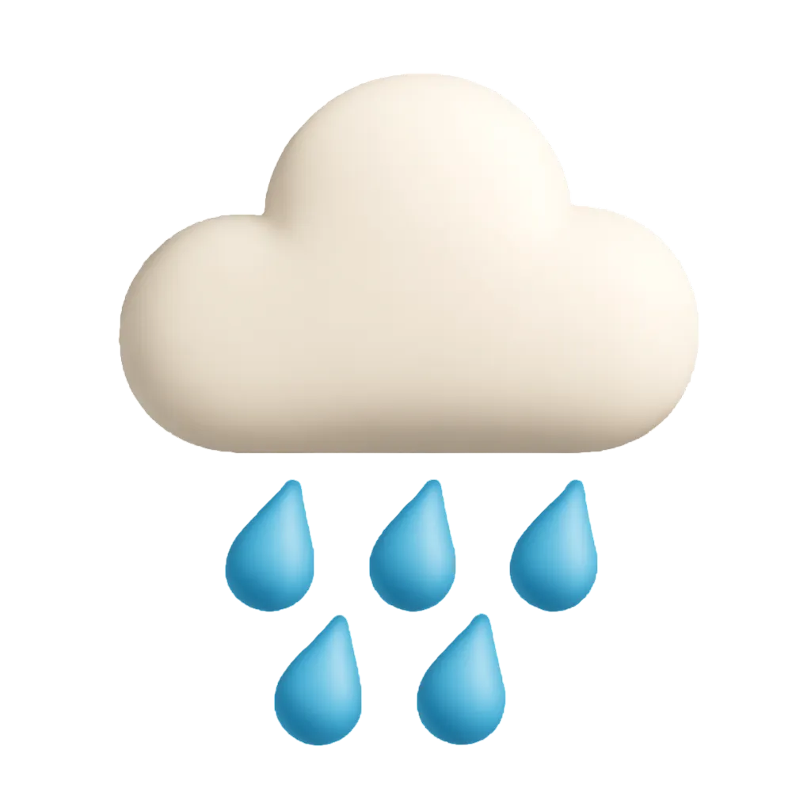

서울의공원
AI 검색
"당신의 마음을 이해하고 대화하는 AI 친구"
ⓒ SIGMOID AI SEARCH
무장애 공원, 무장애 숲길 자료를 검색했습니다.
서울의 공원에서 휠체어로 갈 수 있는 여러 여행 코스를 소개합니다. 각 코스는 공원, 정원, 둘레길을 포함하고 있습니다.
1. 개운산 동행정원
- 위치 : 서울시 성북구 돈암동산 3-3
- 특징 : 어르신, 임산부, 장애인 등 (보행)약자와 함께하는 복지정원
대운산 인근 복지시설 (요양원, 경로당, 장애인 복지시설 등) 이용자가 직접 참여하여 함께 식재하는 정원
- 교통 : 4호선 성신여대입구역 1번 출구로 나온 후 도보 100M 이동
2. 경희궁
- 위치 : 서울시 종로구 새문안로55 (신문로2가 2-1)
- 특징 : 인조 이후 10대에 걸쳐 임금들이 머무른 궁궐, 특히 영조는 치세의 절반을 이곳에서 보냈음
1617년부터 짓기 시작하여 1623년에 완성
서울시에서는 경희궁지에 대한 발굴을 거쳐 숭정전 등 정전지역을 복원하여 2002년부터 시민들에게 공개함
- 교통 : 5호선 서대문역 4번 출구 도보 9분, 5호선 광화문역 1분 출구 도보 10분 , 3호선 경복궁역 7번 출구 도보 14분
3. 와룡공원
- 위치 : 서울시 종로구 와룡공원길 192
- 특징 : 용이 길게 누워있는 형상을 하여 와룡동이라고 불림
토심이 얕아 수목생육이 어렵고, 아카시아 나무 등으로 산림이 조성되었음
주민들이 생명의나무 천만그루 심기 행사에 스스로 참여하여 수목을 심고 가꾸어 푸르른 공원으로 변모 - 교통 : 3호선 안국역2번 출구 → 마을버스 종로 02 → 성대후문, 와룡공원 하차 → 도보 5분
이 코스들은 각 한시간 이내로 이동할 수 있으며, 무장애 관람이 가능합니다. 각 공원과 정원으로 가는 방법을 확인하시고 즐거운 여행을 계획해 보세요.
혹시 이런 질문은 어떠신가요?
날씨가 흐리고, 비가 올 가능성이 높아요! 가디건 혹은 재킷 같은 겉옷과 우산을 챙기세요
11.29
2025
날씨
흐림 뒤 비

최저기온
4˚
최고기온
14˚
강수확률
80%